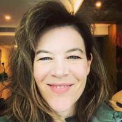
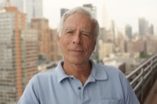

Peabody Award winners
100 people whose festival biography mentions Peabody Award winners. A mention can mean a job, a past job, a grant, a broadcast or an award: read the bio for which.

 Amanda PikePanelist, filmmaker, moderator · 6 editions, 2019–2025The Center for Investigative Reporting
Amanda PikePanelist, filmmaker, moderator · 6 editions, 2019–2025The Center for Investigative Reporting
 Susanne ReberFestival team, panelist, workshop leader · 4 editions, 2018–2022E. W. Scripps Washington Bureau
Susanne ReberFestival team, panelist, workshop leader · 4 editions, 2018–2022E. W. Scripps Washington Bureau

 Nina AlvarezPanelist · 3 editions, 2021–2026
Nina AlvarezPanelist · 3 editions, 2021–2026 Erika CohnFilmmaker, panelist · 3 editions, 2020–2024
Erika CohnFilmmaker, panelist · 3 editions, 2020–2024
- Alex GibneyFilmmaker, panelist · 3 editions, 2015–2019
 Simon KilmurryModerator, panelist, filmmaker · 3 editions, 2016–2025International Documentary Association
Simon KilmurryModerator, panelist, filmmaker · 3 editions, 2016–2025International Documentary Association
 Yoruba RichenFilmmaker, panelist · 3 editions, 2023–2026Newmark Graduate School of Journalism at CUNY
Yoruba RichenFilmmaker, panelist · 3 editions, 2023–2026Newmark Graduate School of Journalism at CUNY
Katerina CizekPanelist · 2 editions, 2017–2021 Billy CorbenFilmmaker, panelist · 2 editions, 2024–2025
Billy CorbenFilmmaker, panelist · 2 editions, 2024–2025
- Ramona DiazFilmmaker, panelist · 2 editions, 2019–2020

- Judith HelfandPanelist, workshop leader, festival team · 2 editions, 2021–2022Chicken & Egg Pictures


 Ben LoetermanPanelist, filmmaker · 2 editions, 2024–2025
Ben LoetermanPanelist, filmmaker · 2 editions, 2024–2025

 Laura PoitrasFilmmaker, panelist · 2 editions, 2025–2026
Laura PoitrasFilmmaker, panelist · 2 editions, 2025–2026 Juliana Schatz PrestonPanelist, filmmaker · 2 editions, 2019–2021
Juliana Schatz PrestonPanelist, filmmaker · 2 editions, 2019–2021

 Nanfu WangPanelist · 2 editions, 2019–2021
Nanfu WangPanelist · 2 editions, 2019–2021


- Nancy BuirskiFilmmaker · 2017
- Ti-Hua ChangPanelist · 2016
- Will CohenFilmmaker · 2018
- Kyra DarntonPanelist · 2026
 Kate DavisFilmmaker · 2023
Kate DavisFilmmaker · 2023- Kirby DickPanelist · 2015
- Ezra EdelmanPanelist · 2016
- Orlando von EinsiedelFilmmaker · 2019
- Deborah EsquenaziPanelist · 2017
- Heidi EwingFilmmaker · 2017
 Violet Du FengPanelist · 2021
Violet Du FengPanelist · 2021 Cheryl FieldsPanelist · 2026
Cheryl FieldsPanelist · 2026 Darren FosterFilmmaker · 2022
Darren FosterFilmmaker · 2022- Geeta GandbhirPanelist · 2021
 Rick GoldsmithFilmmaker · 2023
Rick GoldsmithFilmmaker · 2023 Sabrina Schmidt GordonPanelist · 2021
Sabrina Schmidt GordonPanelist · 2021 Christalyn HamptonFilmmaker · 2026
Christalyn HamptonFilmmaker · 2026- Steve JamesFilmmaker · 2016
 Eugene JareckiPanelist, filmmaker · 2025
Eugene JareckiPanelist, filmmaker · 2025
- Sally LehrmanPanelist · 2024

Marc Levin2021- Beth LevisonFilmmaker, panelist · 2021
 Annukka Lilja2026
Annukka Lilja2026- Shola LynchWorkshop leader · 2018Schomburg Center for Research in Black Culture, The New York Public Library
- Claudia MilnePanelist · 2018

 Stanley NelsonFilmmaker, panelist · 2021
Stanley NelsonFilmmaker, panelist · 2021- Marilyn NessPanelist · 2018
- Fred PeabodyFilmmaker · 2016
 Raoul PeckPanelist, filmmaker · 2024
Raoul PeckPanelist, filmmaker · 2024 Charles PoeModerator · 2025
Charles PoeModerator · 2025 Michael PremoFilmmaker, panelist · 2024
Michael PremoFilmmaker, panelist · 2024- Larissa RhodesPanelist · 2020
- Kenneth RosenbergFilmmaker · 2019
 Joshua SeftelPanelist, filmmaker · 2025
Joshua SeftelPanelist, filmmaker · 2025 Kevin ShawPanelist · 2023
Kevin ShawPanelist · 2023 Joseph SingerPanelist · 2021
Joseph SingerPanelist · 2021
 Lisa WarwickPanelist · 2026
Lisa WarwickPanelist · 2026 Seth Freed WesslerFilmmaker, panelist · 2021
Seth Freed WesslerFilmmaker, panelist · 2021 Annie WongFilmmaker, panelist · 2025
Annie WongFilmmaker, panelist · 2025